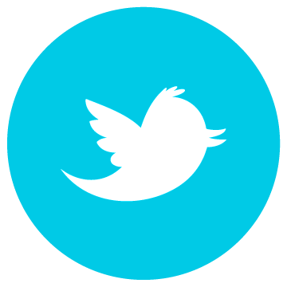

Nyd Livet - Også på cykelstien


Vi skal alle være her. Unge som gamle. Det gælder i særdeleshed på cykelstien hvor statistikker viser, at cirka hver tredje person i alderen +65 føler sig utrygge i trafikken. Det sætter Rådet for Sikker Trafik og Forsikring & Pension fokus på ved at opfordre Danmarks borgere til at støtte op om Den Grønne Linje.